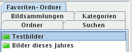
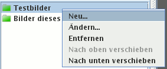

Der Kartenreiter Favoriten-Ordner zeigt Lesezeichen für alle Ordner, die Sie häufig benötigen und deswegen hier abgelegt haben. Der Vorteil gegenüber dem Ordner-Kartenreiter ist: Sie müssen nicht mehrmals klicken und Unter-Ordner öffnen, Sie können einen beliebigen Namen vergeben und die Lesezeichen nach Ihren Bedürfnissen verschieben.

Klicken Sie mit der linken Maustaste auf ein Lesezeichen, werden Vorschaubilder angezeigt für alle Bilder dieses Ordners. Mit der rechten Maustaste erhalten Sie ein Kontextmenü mit verschiedenen Optionen wie dem Bearbeiten, Verschieben oder Löschen des Lesezeichens.
